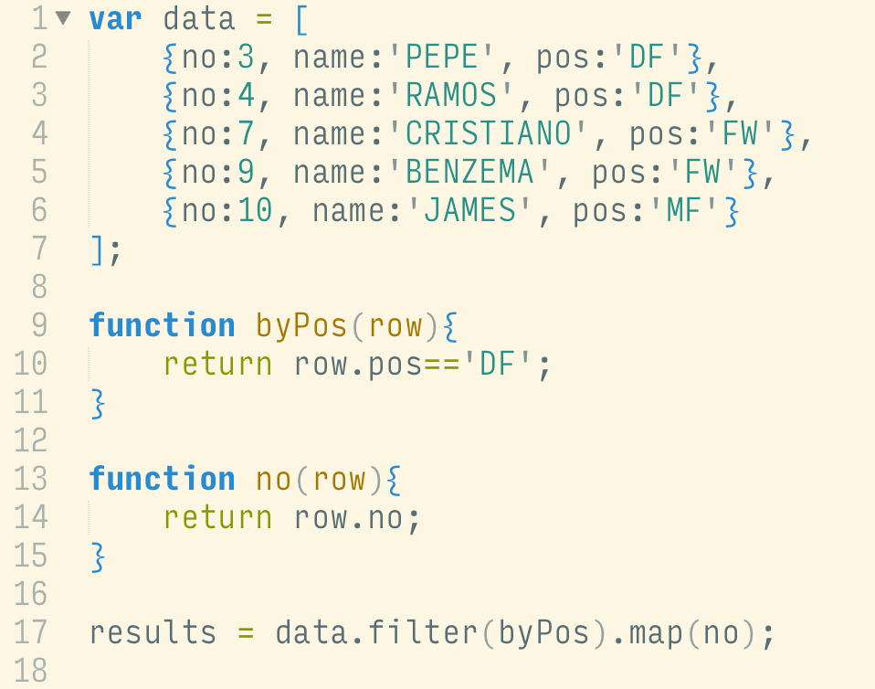

In comparison with a famous programming paradigm, OOP, here are conceptually notable differences:
Given the data variable above, how can we quickly write a code snippet to filter the number of players whose pos is DF?
Without a mindset in Functional Programming, we might end up doing:
The code snippet above yields a result as expected. We've got an array filtered by the 'pos' and takes the 'no' if the criterion is met. However, it doesn't explicitly show what the code does.
What if we improve this by writing it in a Functional Programming perspective?
Below is what we may end up doing:

Notice something above in the snippet?
Do you personally think the Functional code above is barely readable? Also, do you think the code is difficult to test, seriously?
See the Functional code below:
The code above is purely functional and employs lambda functions as arguments. However, it does not look good at all. Imagine the scenarios where the logic get much more complicated, spaghetti code might be one of the terminology which promptly appears in your mind.
The resultant arrays on the 27th and 28th are straightforward and semantic.
The code clearly shows what it does with the data in order to take appropriate output. The statement is plain English and we can subconciously understand that it takes the [data], filters it, and maps the format so it yields the final output.
This is somewhat semantic.
One other remarkable thing with Functional code above is, each of the functions is definitely stateless. Given a particular input, it always yields exactly the same output because it doesn't depend on any other external states.
This simplifies unit testing. Thanks to the purely functional concept.
Functional programming is not a silver bullet to every possible problems.
In some tasks, writing your code in Functional style complicate it further in some degree. Functional code can be thoughtfully written in a clearer appearance but not always. But when you tend to write code based on Functional philosophy, try your best to tidy it for other people who will look at your code later (even your future self).
Lots of people dislike the way Functional code looks so let's change their minds.